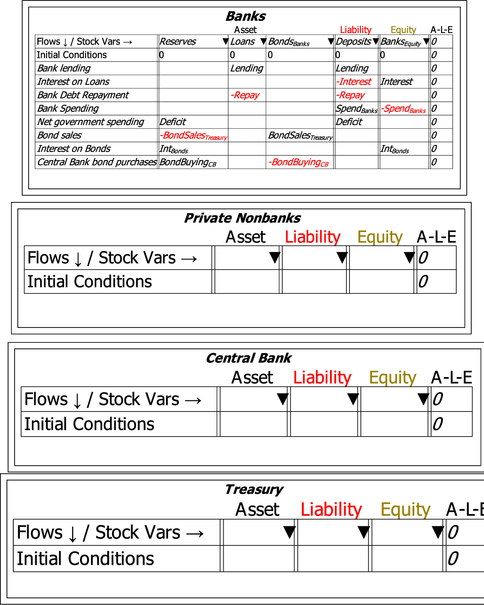
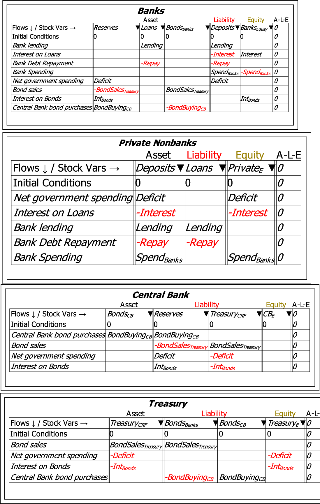

Minsky uses the fact that one entity's financial asset is another's financial liability to rapidly build interlocked Godley Tables, which describe the financial system from the perspective of every entity or sector modelled in it. The inverted wedge [ifgeo]99 next to the name of every column is used to check for Assets that have not yet been recorded as a Liability, and vice versa. The next figure shows an expanded Godley Table for the Banking Sector, with additional Tables added for the Non-bank private sector, the Central Bank, and the Treasury.

As well as auto-completing much of the additional Godley Tables, the system indicates the need for additional accounts that are not part of the initial Banks Godley Table. Central Bank purchases of bonds from private banks indicate the need for the Asset BondsCB, while the deficit indicates the need to add the Treasury's account at the Central Bank, the ``Consolidated Revenue Fund'', as an additional liability of the Central Bank.

The inverted wedge next to the Equity column supports nonfinancial assets--things like houses, and shares valued in excess of their limited liability. If these are included amongst the assets of an entity, then they can also be recorded as an Equity of that entity (this feature is still under development).